── Attaching core tidyverse packages ──────────────────────── tidyverse 2.0.0 ──
✔ dplyr 1.1.4 ✔ readr 2.1.5
✔ forcats 1.0.0 ✔ stringr 1.5.1
✔ ggplot2 3.5.1 ✔ tibble 3.2.1
✔ lubridate 1.9.3 ✔ tidyr 1.3.1
✔ purrr 1.0.2
── Conflicts ────────────────────────────────────────── tidyverse_conflicts() ──
✖ dplyr::filter() masks stats::filter()
✖ dplyr::lag() masks stats::lag()
ℹ Use the conflicted package (<http://conflicted.r-lib.org/>) to force all conflicts to become errors
library(ggplot2)library(dplyr)
Summarizing Student Data
For this part, we’ll use data that comes from the UCI machine learning repository. The data is about secondary education in two Portuguese schools.
Task 1: Read in the Data and Modify
First, modify the code provided with the download to read in the data from a local file source (your downloaded .csv files) and combine the two data frames. Use local paths as they do in their code.
d1=read.table("student-mat.csv",sep=";",header=TRUE)d2=read.table("student-por.csv",sep=";",header=TRUE)d3=merge(d1,d2,by=c("school","sex","age","address","famsize","Pstatus","Medu","Fedu","Mjob","Fjob","reason","nursery","internet"))print(nrow(d3)) # 382 students
[1] 382
Second, read in and combine the data using functions from the tidyverse. Use an inner_join() on the variables they used in their code. Do you notice any issues? Make a note of the issue.
Warning in inner_join(mat_data, por_data, by = c("school", "sex", "age", : Detected an unexpected many-to-many relationship between `x` and `y`.
ℹ Row 79 of `x` matches multiple rows in `y`.
ℹ Row 79 of `y` matches multiple rows in `x`.
ℹ If a many-to-many relationship is expected, set `relationship =
"many-to-many"` to silence this warning.
head(school_data_error)
# A tibble: 6 × 53
school sex age address famsize Pstatus Medu Fedu Mjob Fjob reason
<chr> <chr> <dbl> <chr> <chr> <chr> <dbl> <dbl> <chr> <chr> <chr>
1 GP F 18 U GT3 A 4 4 at_home teacher course
2 GP F 17 U GT3 T 1 1 at_home other course
3 GP F 15 U LE3 T 1 1 at_home other other
4 GP F 15 U GT3 T 4 2 health servic… home
5 GP F 16 U GT3 T 3 3 other other home
6 GP M 16 U LE3 T 4 3 services other reput…
# ℹ 42 more variables: guardian.x <chr>, traveltime.x <dbl>, studytime.x <dbl>,
# failures.x <dbl>, schoolsup.x <chr>, famsup.x <chr>, paid.x <chr>,
# activities.x <chr>, nursery <chr>, higher.x <chr>, internet <chr>,
# romantic.x <chr>, famrel.x <dbl>, freetime.x <dbl>, goout.x <dbl>,
# Dalc.x <dbl>, Walc.x <dbl>, health.x <dbl>, absences.x <dbl>, G1.x <dbl>,
# G2.x <dbl>, G3.x <dbl>, guardian.y <chr>, traveltime.y <dbl>,
# studytime.y <dbl>, failures.y <dbl>, schoolsup.y <chr>, famsup.y <chr>, …
We note that we have multiple variables that are listed as var_name.x and var_name.y, which implies that the same variable name occurs in both data sets (mat_data and por_data). However, since we did not join on those variables and they exist in both mat_data and por_data we will get the var_name.x and var_name.y
Use an inner_join() on all variables other than G1, G2, G3, paid, and absences. Use this form of the combined data in further exercises.
school_data <-inner_join(mat_data, por_data, by =c("school","sex","age","address","famsize","Pstatus","Medu","Fedu","Mjob","Fjob","reason","guardian","traveltime","studytime","failures","schoolsup","famsup","activities","nursery","higher","internet","romantic","famrel","freetime","goout","Dalc","Walc","health")) |>collect()head(school_data)
# A tibble: 6 × 38
school sex age address famsize Pstatus Medu Fedu Mjob Fjob reason
<chr> <chr> <dbl> <chr> <chr> <chr> <dbl> <dbl> <chr> <chr> <chr>
1 GP F 18 U GT3 A 4 4 at_home teacher course
2 GP F 17 U GT3 T 1 1 at_home other course
3 GP F 15 U GT3 T 4 2 health servic… home
4 GP F 16 U GT3 T 3 3 other other home
5 GP M 16 U LE3 T 4 3 services other reput…
6 GP M 16 U LE3 T 2 2 other other home
# ℹ 27 more variables: guardian <chr>, traveltime <dbl>, studytime <dbl>,
# failures <dbl>, schoolsup <chr>, famsup <chr>, paid.x <chr>,
# activities <chr>, nursery <chr>, higher <chr>, internet <chr>,
# romantic <chr>, famrel <dbl>, freetime <dbl>, goout <dbl>, Dalc <dbl>,
# Walc <dbl>, health <dbl>, absences.x <dbl>, G1.x <dbl>, G2.x <dbl>,
# G3.x <dbl>, paid.y <chr>, absences.y <dbl>, G1.y <dbl>, G2.y <dbl>,
# G3.y <dbl>
Next, for the math data, Portuguese, and combined data, choose four categorical variables you are interested in and convert those into factor variables in each tibble (use the same four variables in each). Use the mutate() function to accomplish this.
For this exercise, the four categorical variables i’ll be interested in are: address (student’s home address type (binary: ‘U’ - urban or ‘R’ - rural)), Pstatus (parent’s cohabitation status (binary: ‘T’ - living together or ‘A’ - apart)), activities(extra-curricular activities (binary: yes or no)), and higher (wants to take higher education (binary: yes or no)).
We’ve talked about the general process of conducting an EDA. You try to understand how your data is stored, what is missing, and you try to summarize the variables both numerically and visually to understand relationships within the data.
Do the rest of these items on the combined data:
Look at how the data is stored and see if everything makes sense.
print(school_data)
# A tibble: 320 × 38
school sex age address famsize Pstatus Medu Fedu Mjob Fjob reason
<chr> <chr> <dbl> <fct> <chr> <fct> <dbl> <dbl> <chr> <chr> <chr>
1 GP F 18 Urban GT3 Apart 4 4 at_home teac… course
2 GP F 17 Urban GT3 Together 1 1 at_home other course
3 GP F 15 Urban GT3 Together 4 2 health serv… home
4 GP F 16 Urban GT3 Together 3 3 other other home
5 GP M 16 Urban LE3 Together 4 3 services other reput…
6 GP M 16 Urban LE3 Together 2 2 other other home
7 GP F 17 Urban GT3 Apart 4 4 other teac… home
8 GP M 15 Urban LE3 Apart 3 2 services other home
9 GP M 15 Urban GT3 Together 3 4 other other home
10 GP F 15 Urban GT3 Together 4 4 teacher heal… reput…
# ℹ 310 more rows
# ℹ 27 more variables: guardian <chr>, traveltime <dbl>, studytime <dbl>,
# failures <dbl>, schoolsup <chr>, famsup <chr>, paid.x <chr>,
# activities <fct>, nursery <chr>, higher <fct>, internet <chr>,
# romantic <chr>, famrel <dbl>, freetime <dbl>, goout <dbl>, Dalc <dbl>,
# Walc <dbl>, health <dbl>, absences.x <dbl>, G1.x <dbl>, G2.x <dbl>,
# G3.x <dbl>, paid.y <chr>, absences.y <dbl>, G1.y <dbl>, G2.y <dbl>, …
After investigating how our data is stored, everything makes sense and we can now investigate any missing values.
We note that there are no missing values in the data.
Categorical Variables
Create a one-way contingency table, a two-way contingency table, and a three-way contingency table for some of the factor variables you created previously. Use table() to accomplish this.
– Interpret a number from each resulting table (that is, pick out a value produced and explain what that value means.)
We first start with the one-way contingency table for address, to determine the counts for students who live in an Urban or Rural area. From the table below we see that 253 students out of the two Portuguese schools have an Urban home address.
table(school_data$address)
Urban Rural
253 67
Now we can look at a two-way contingency table for address and higher, to determine the counts for students interested in higher education across the two home address types Urban and Rural. From the table below we see that 64 out of the 67 Rural students want to take higher education.
table(school_data$address, school_data$higher)
no yes
Urban 4 249
Rural 3 64
We can also take a look at a three-way contingency table for address, higher, and Pstatus. From the table below we see that of the students whose parents live together, 4 of the students living in an Urban home address do not have intentions of going for higher education.
, , = Together
no yes
Urban 4 223
Rural 2 60
, , = Apart
no yes
Urban 0 26
Rural 1 4
Create a conditional two-way table using table(). That is, condition on one variable’s setting and create a two-way table. Do this using two different methods:
– Once, by subsetting the data (say with filter()) and then creating the two-way table
We can subset the data to only have students whose parents are living together.
Create a two-way contingency table using group_by() and summarize() from dplyr. Then use pivot_wider() to make the result look more like the output from table().
Create a stacked bar graph and a side-by-side bar graph. Give relevant x and y labels, and a title for the plots.
For our stacked bar graph, we can look at address and higher. From the stacked bar graph below, we notice that for both Urban and Rural students, there is a small count of students who do not have higher education goals. This is consistent with our contingency table findings.
g <-ggplot(data = school_data, aes(x = address, fill = higher))g +geom_bar() +labs(x ="Home Address", y ="Count of Students", title ="Stacked Bar Graph of Students Home Address and Higher Education Goals") +scale_fill_discrete("Higher Education Goals")
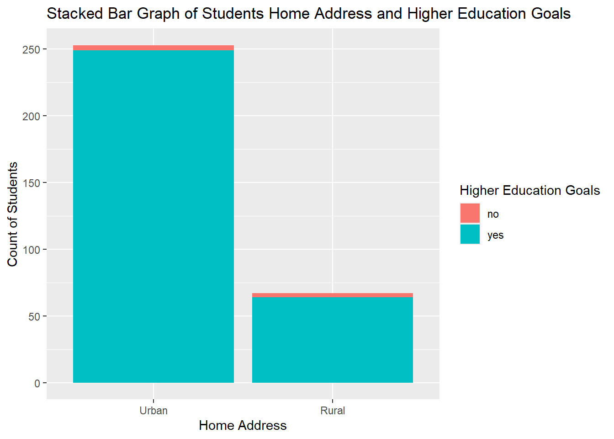
We can now do a side-by-side bar plot for Pstatus and activities. From the side-by-side bar plot below, we again see that for both Urban and Rural students, a low count of students are not involved in activities outside of school. Although, when comparing the Urban and Rural group, the Urban group may have more students who are not involved in activities compared to the rural group.
g <-ggplot(data = school_data, aes(x = Pstatus, fill = activities))g +geom_bar(position ="dodge") +labs(x ="Parental Living Status", y ="Count of Students",title ="Side-by-side Bar Graph of Parental Living Status and Student Involved in Activities") +scale_fill_discrete("Student Involved in Activities")
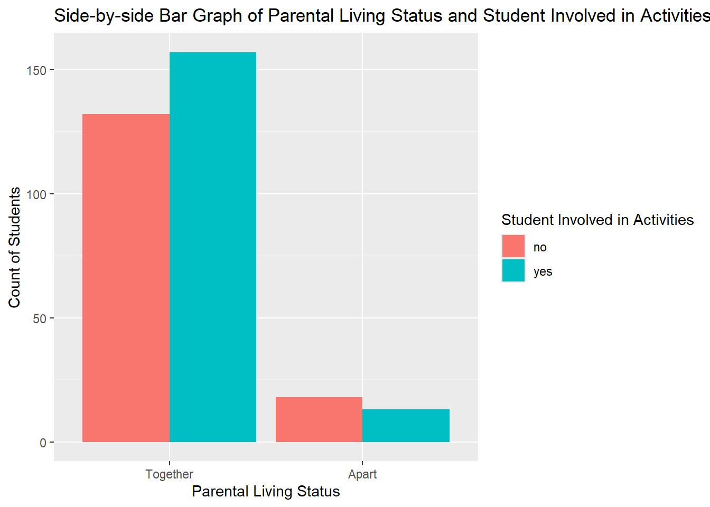
Numeric Variables (across groups)
The numeric variables are age, absences, and the three test grades variables (G1, G2, and G3) from each data set (math and Portuguese).
Find measures of center and spread for three of these variables (including at least one G3 variable)
Here the three numeric variables of interest are age, math G3 score, and Portuguese G3 score. From these summaries we see that on average, there is a higher Portuguese G3 score, or Final Grade, compared to the Math G3 score. Specifically there is on average a 1.84 point difference in the Final Grade between these two classes, with the Portuguese Final Grade having a smaller standard deviation compared to the Math Final Grade standard deviation.
– Repeat while subsetting the data in a meaningful way.
Here we can subset to only include students who want to take higher education. We note that for students who want to take higher education, there is a similar trend in the difference in means between the Portuguese Final Grade and the Math Final Grade, with the Portuguese Final Grade having a slightly larger mean and smaller standard deviation compared to the Math Final Grade.
Find measures of center and spread across a single grouping variable for three of these variables (including a G3 variable as one of them)
Here we will use the same three numeric variables (age, math G3 score and Portugues G3 score) group according to address. From this summarization, we see that for both Urban and Rural students we again see a higher mean Final Grade for Portuguese compared to Math. And when we compare the two groups, we see that Urban students have a higher final grade in these two courses compared to the Rural students.
Find measures of center and spread across two grouping variables for three of these variables (including a G3 variable as one of them)
Again we will use the same three numeric variables and group by address, and include Pstatus as an extra grouping variable. For this summarization, we see something interesting when we include a grouping of Parental Status. When comparing across Rural students, we see that those whose parents are living together have a lower math and portuguese final grade compared to Rural students whose parents live apart. However, for Urban students, we see a similar mean Final Grade for the Math and Portuguese classes across student’s whose parents live together and who live apart.
Create a correlation matrix between all of the numeric variables
From our correlation matrix below, we note that the First Period (G1), Second Period (G2), and Final Grade (G3) for each class (x - math and y - Portuguese) have a strong positive linear relationship with the other grades for that class.
Warning: Using an external vector in selections was deprecated in tidyselect 1.1.0.
ℹ Please use `all_of()` or `any_of()` instead.
# Was:
data %>% select(numeric_var)
# Now:
data %>% select(all_of(numeric_var))
See <https://tidyselect.r-lib.org/reference/faq-external-vector.html>.
Create a histogram, kernel density plot, and boxplot for two of the numeric variables across one of the categorical variables (that is, create graphs that can compare the distributions across the groups on the same plot (no faceting here)). Add appropriate labels and titles.
Here we can look at the age and G3.y (Portuguese) across the address variable. That is we will create six different graphs.
First we have a histogram for student age across home address. From this graph we see that the largest age group of students in urban areas is 16, whereas in rural areas it is 17. We also see that there is a possible outlier with one Urban student being 22.
#Histogram for age and addresshist <-ggplot(data = school_data, aes(x = age, fill = address))hist +geom_bar(position ="dodge") +labs(x ="Age of Students", y ="Count of Students", title ="Histogram of Age of Students Across Home Address") +scale_fill_discrete("Home Address")
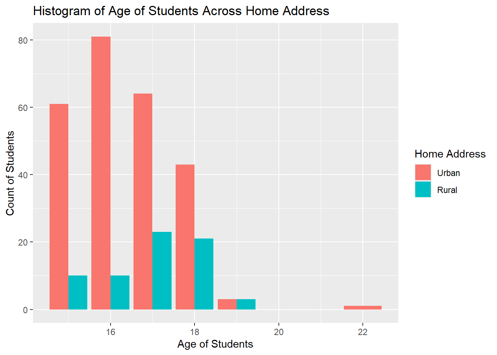
Next we have a kernel density plot for student age across home address. With the kernel density plot below, we again see that there is a higher frequency of students aged 17 and 18 among those living in Rural areas. Whereas, for students living in urban areas, we see multiple peaks in the plot.
#Kernel Density Plot for Age and Addresskernel <-ggplot(data = school_data, aes(x = age))kernel +geom_density(alpha =0.5, aes(fill = address)) +labs(x ="Age of Students", y ="Frequency of Students",title ="Kernel Density Plot for Age of Students Across Home Address") +scale_fill_discrete("Home Address")
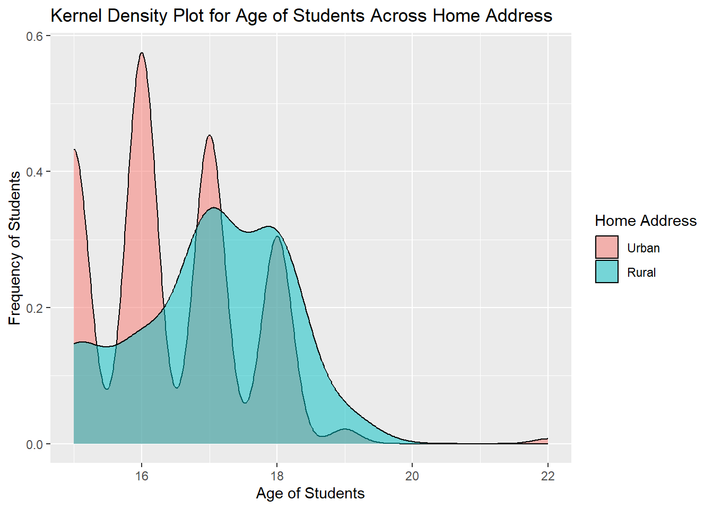
Next, we have a box plot for age of students across address. In the box plot below we see that the Rural students have a larger variation of ages, and that the student who lives in an Urban area and is aged 22 is most likely an outlier.
#Box Plot for Age and Addressbox <-ggplot(data = school_data, aes(x = address, y = age, fill = address))box +geom_boxplot() +geom_jitter(width =0.2, alpha =0.3) +labs(x ="Home Address", y ="Age of Students", title ="Box Plot for Age of Students Across Home Address") +scale_fill_discrete("Home Address")
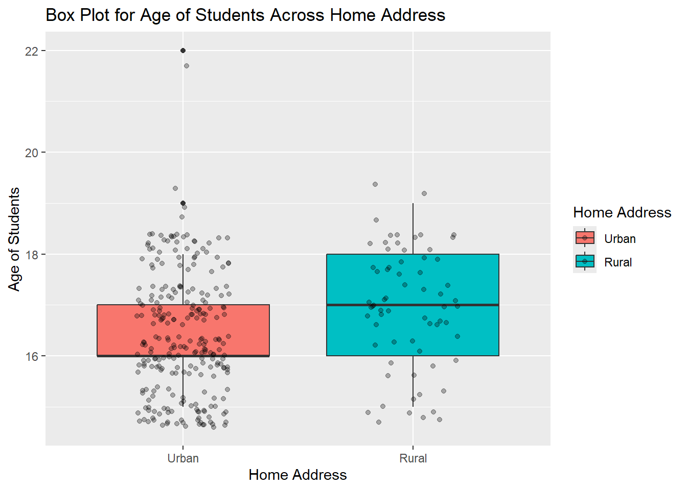
We can now examine the same plots but for the Portuguese final grade (G3.y) across home address. In the histogram below we see that most urban students scored in the 10/20 to 15/20 range for Portuguese final grade. We see a similar finding for rural students, but it’s important to note that more rural students received a final grade of 0/20 compared to the urban students.
#Histogram for Portuguese final grade and addresshist <-ggplot(data = school_data, aes(x = G3.y, fill = address))hist +geom_bar(position ="dodge") +labs(x ="Portugues Final Grade", y ="Count of Final Grade Scores", title ="Histogram of Portuguese Final Grade Across Home Address") +scale_fill_discrete("Home Address")
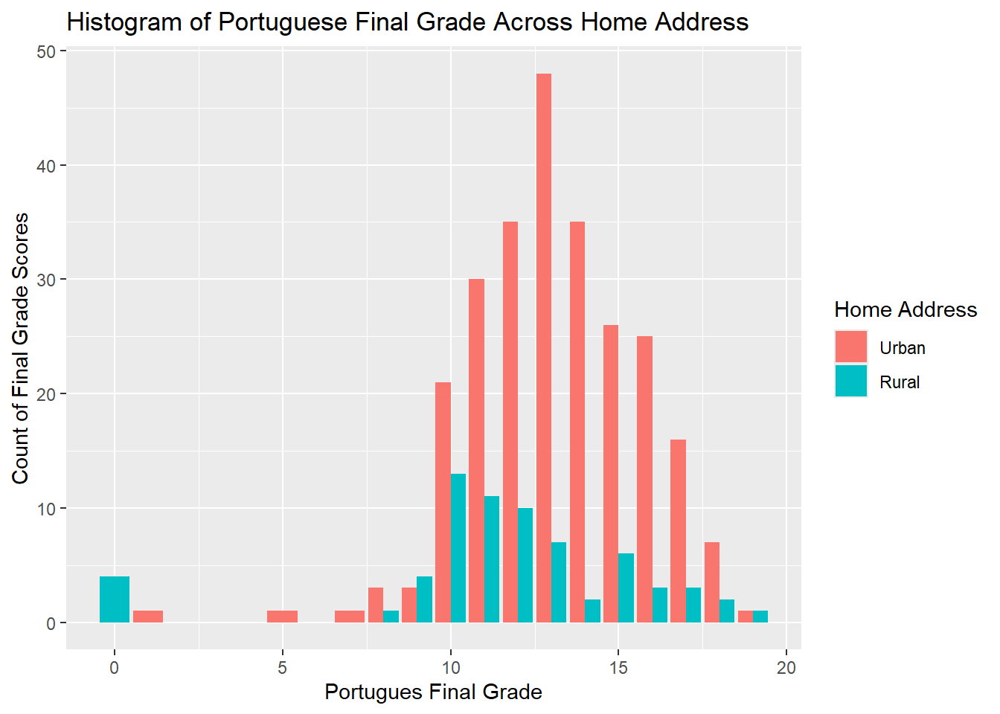
In the kernel density plot below, we see a similar trend as in the histogram. Specifically, we see that the urban students scored higher for the Portuguese Final Grade compared to the rural students.
#Kernel Density Plot for Portugues Final Grade and Addresskernel <-ggplot(data = school_data, aes(x = G3.y))kernel +geom_density(alpha =0.5, aes(fill = address)) +labs(x ="Portuguese Final Grade", y ="Frequency of Final Grade",title ="Kernel Density Plot for Portugues Final Grade Across Home Address") +scale_fill_discrete("Home Address")
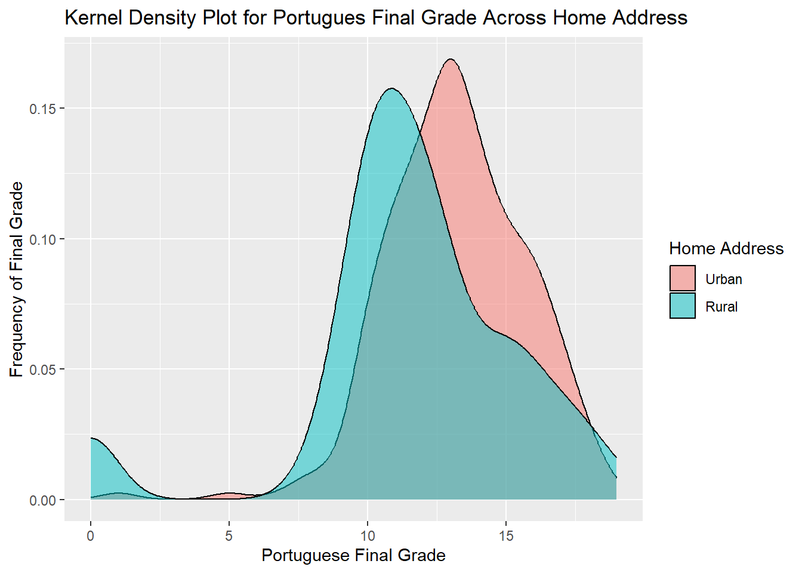
Again, the box plot below confirms that the distribution of urban students scored higher on the Portuguese final grade compared to the rural students, due to the IQR for urban students falling in a higher grade range compared to the rural students.
#Box Plot for Portugues Final Grade and Addressbox <-ggplot(data = school_data, aes(x = address, y = G3.y, fill = address))box +geom_boxplot() +geom_jitter(width =0.2, alpha =0.3) +labs(x ="Home Address", y ="Portuguese Final Grade", title ="Box Plot for Portuguese Final Grade Across Home Address") +scale_fill_discrete("Home Address")
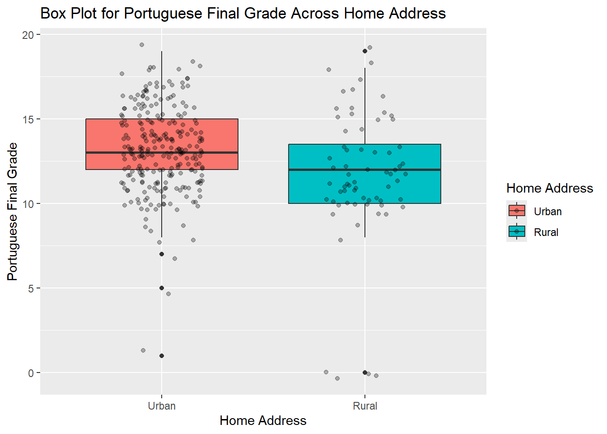
Create two scatterplots relating a G3 variable to other numeric variables (put G3 on the y-axis). You should jitter the points if they sit on top of each other. Color the points by a categorical variable in each. Add appropriate labels and titles.
Here we will relate the Portuguese Final Grade (G3.y) to the Portuguese First Period Grade (G1.y) across the Student’s Home Address. We see that for both Home Addresses, students typically improved in their Portuguese class when comparing the first period grade and the final grade. However, there are some outliers among the urban and rural students, as some rural students scored a zero on the final grade and some urban students scored a zero for the first period grade.
#Scatterplot of Portuguese First Period Grade and Final Gradescatter <-ggplot(school_data, aes(x = G1.y, y = G3.y, color = address))scatter +geom_point() +geom_jitter(alpha =0.3) +labs(x ="Portuguese First Period Grade", y ="Portuguese Final Grade",title ="Scatterplot of Student's Portuguese First Period Grade vs. Final Grade", color ="Home Address")
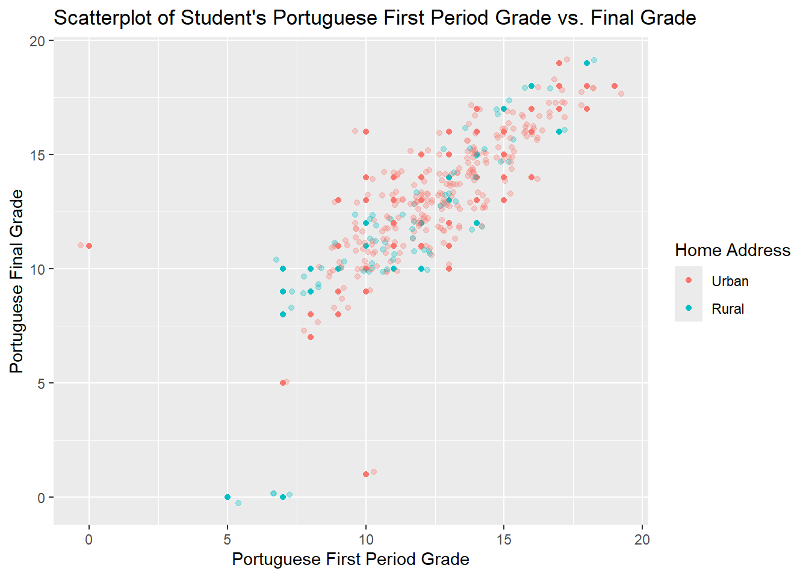
We can now relate absences in the Portuguese class (absences.y) with the Portuguese Final Grade (G3.y) across the Student’s Home Address. From the scatterplot below we notice that for the most part, less absences in the Portuguese class correlates to a higher final grade. However, there are a few urban students who are outliers and appear to be those students who can miss class and still do really well in the class.
#Scatterplot of Portuguese Class Absences and Portuguese Final Gradescatter <-ggplot(school_data, aes(x = absences.y, y = G3.y, color = address))scatter +geom_point() +geom_jitter(alpha =0.3) +labs(x ="Portuguese Class Absences", y ="Portuguese Final Grade",title ="Scatterplot of Portuguese Class Absences vs. Portuguese Final Grade", color ="Home Address")
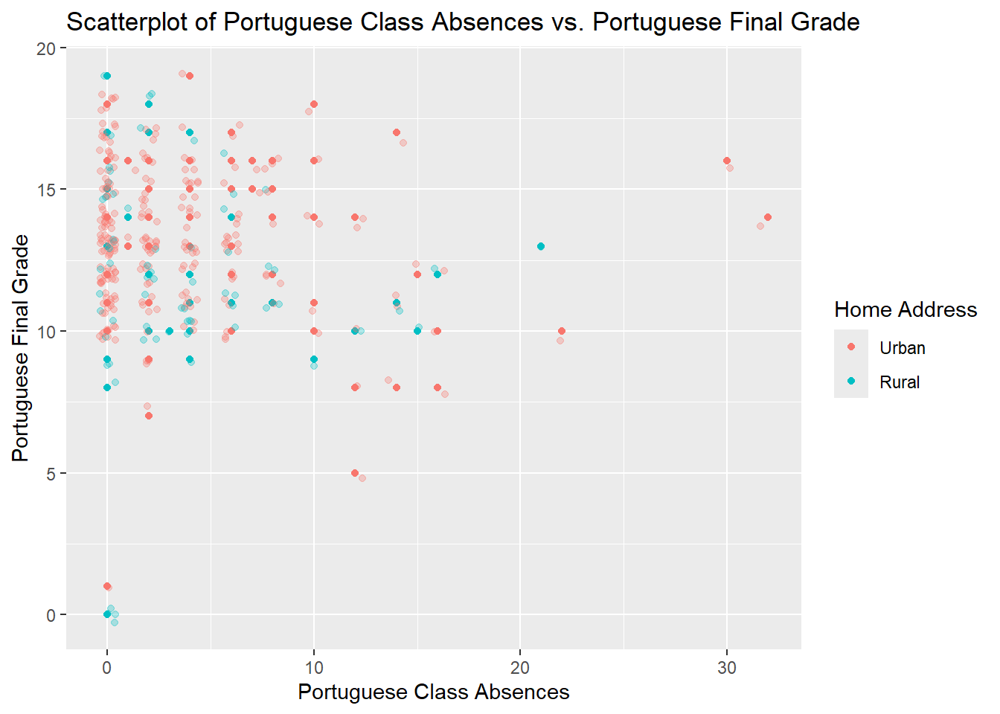
Repeat the scatter plot step but use faceting to obtain graphs at each setting of another categorical variable.
Here we will facet by the Parental Status Pstatus variable. We first look at the relationship between Portuguese First Period Grade vs Final Grade. From the scatterplot below we notice that there isn’t too much of a difference in the trend between the Portuguese first period grade and the final grade across students whose parents live together versus those whose parents live apart. Which suggests that maybe parental status does not impact the improvement between the first period grades and final grades for the portuguese class.
#Scatterplot of Portuguese First Period Grade and Final Grade with Facet of Pstatusscatter <-ggplot(school_data, aes(x = G1.y, y = G3.y, color = address))scatter +geom_point() +geom_jitter(alpha =0.3) +labs(x ="Portuguese First Period Grade", y ="Portuguese Final Grade",title ="Scatterplot of Student's Portuguese First Period Grade vs. Final Grade", subtitle ="Across Parental Status", color ="Home Address") +facet_wrap(~ Pstatus)
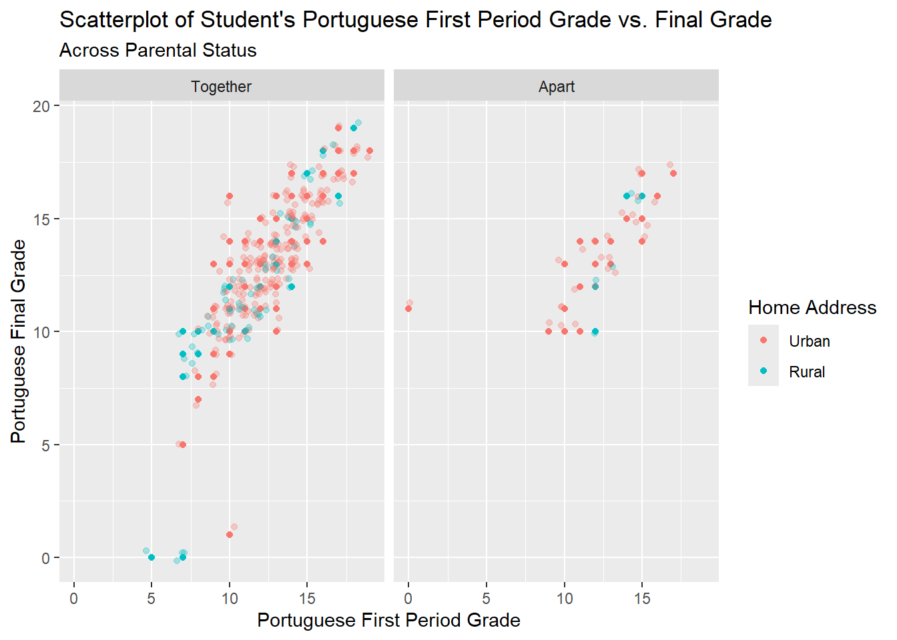
Now we can do a similar thing with the Portuguese Class Absences and Portuguese Final Grade. We again can see a similar trend in the class absences and final grade for the portuguese class when comparing student’s parental status. For both parental status’ we see those outlier urban students who can miss more classes and still perform relatively well on the final grade. However, it is interesting to note that for rural students whose parents live together, there are a few outliers who have zero absences and still scored a 0/20, which suggests that these students may have not taken the portuguese class.
#Scatterplot of Portuguese Class Absences and Portuguese Final Grade across Parental Statusscatter <-ggplot(school_data, aes(x = absences.y, y = G3.y, color = address))scatter +geom_point() +geom_jitter(alpha =0.3) +labs(x ="Portuguese Class Absences", y ="Portuguese Final Grade",title ="Scatterplot of Portuguese Class Absences vs. Portuguese Final Grade", color ="Home Address") +facet_wrap(~ Pstatus)
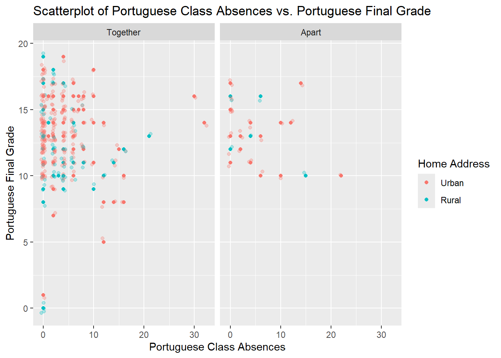
Repeat the scatter plot step but use faceting to obtain graphs at each combination of two categorical variables.
In addition to faceting by Parental Status (Pstatus), we can also recreate our scatterplots by faceting by Higher Education Goals (higher).
First we add the Higher Education Goals facet to our scatterplot of Portuguese First Period Grade vs. Final Grade. We note that there is a small number of students across parental status who did not have higher education goals. However, this graph does communicate to us that for those students who do not have higher education goals, across both parental status’ we see a similar mid-level relationship between the first period grade and final grade for the portuguese class. We also note that for those who do have higher education goals, we saw a positive trend across both parental status’ of improvement between the first period grade and final grade for the portuguese class.
#Scatterplot of Portuguese First Period Grade and Final Grade with Faceting of Pstatus and Higherscatter <-ggplot(school_data, aes(x = G1.y, y = G3.y, color = address))scatter +geom_point() +geom_jitter(alpha =0.3) +labs(x ="Portuguese First Period Grade", y ="Portuguese Final Grade",title ="Scatterplot of Student's Portuguese First Period Grade vs. Final Grade", subtitle ="Across Higher Education Goals and Parental Status", color ="Home Address") +facet_wrap(higher ~ Pstatus)
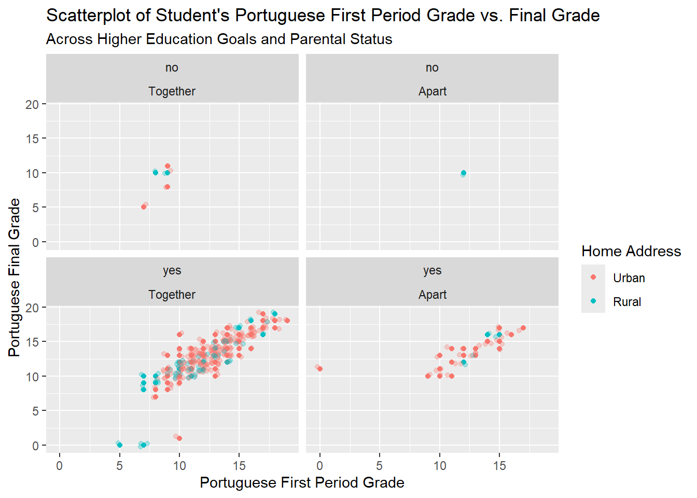
Similarly we can do it with our other scatterplot for Portuguese class absenses and final grades, and observe similar trends as we noted before in prior graphs. We see that across higher education goals and parental status’, students who missed less class typically scored a little better on the exam. But again, we see there are outlier urban students, mainly among those who have higher education goals, where students missed a ton of classes and still received a relatively decent final grade in the portuguese class.
#Scatterplot of Portuguese Class Absences and Portuguese Final Grade across Higher Education Goals and Parental Statusscatter <-ggplot(school_data, aes(x = absences.y, y = G3.y, color = address))scatter +geom_point() +geom_jitter(alpha =0.3) +labs(x ="Portuguese Class Absences", y ="Portuguese Final Grade",title ="Scatterplot of Portuguese Class Absences vs. Portuguese Final Grade", color ="Home Address") +facet_wrap(higher ~ Pstatus)